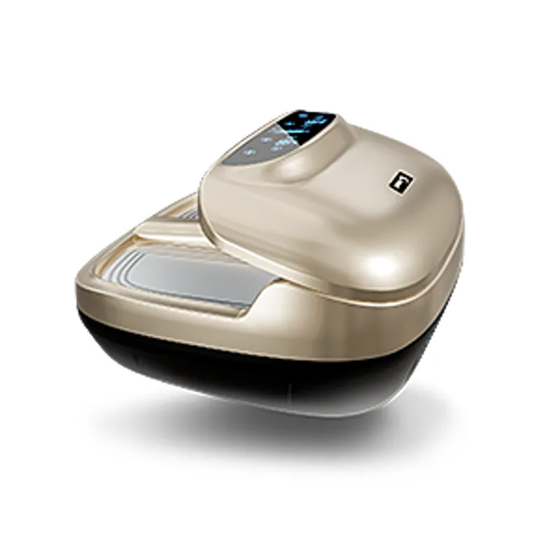
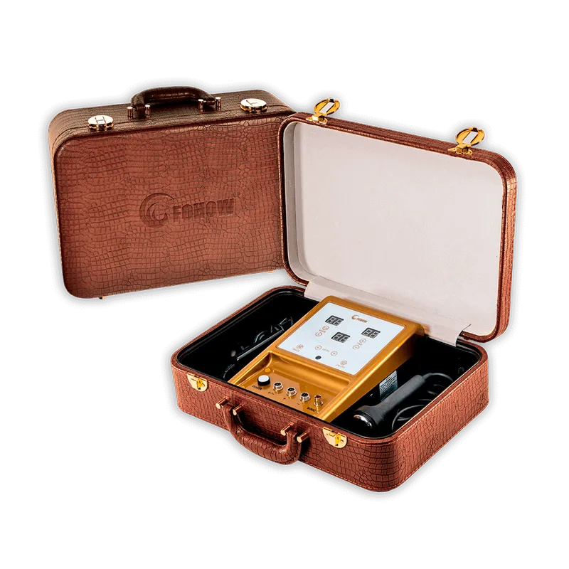
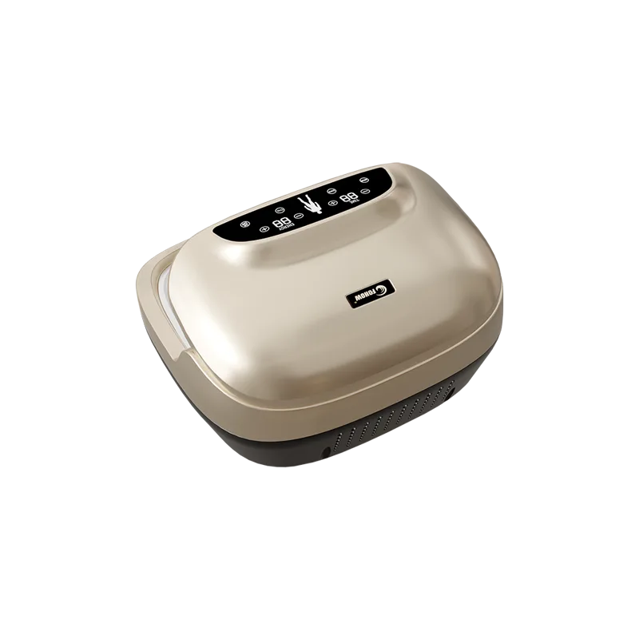
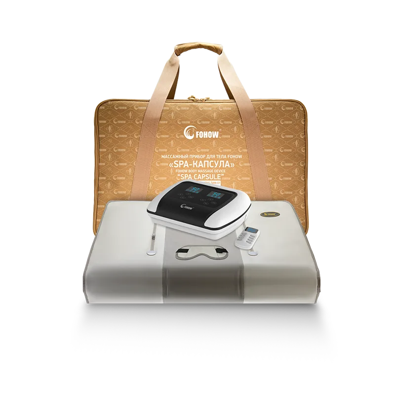
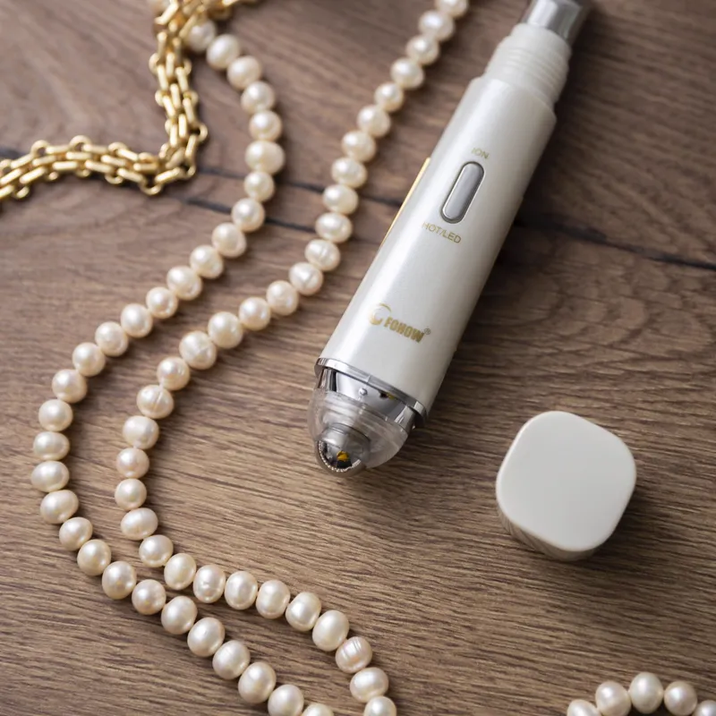
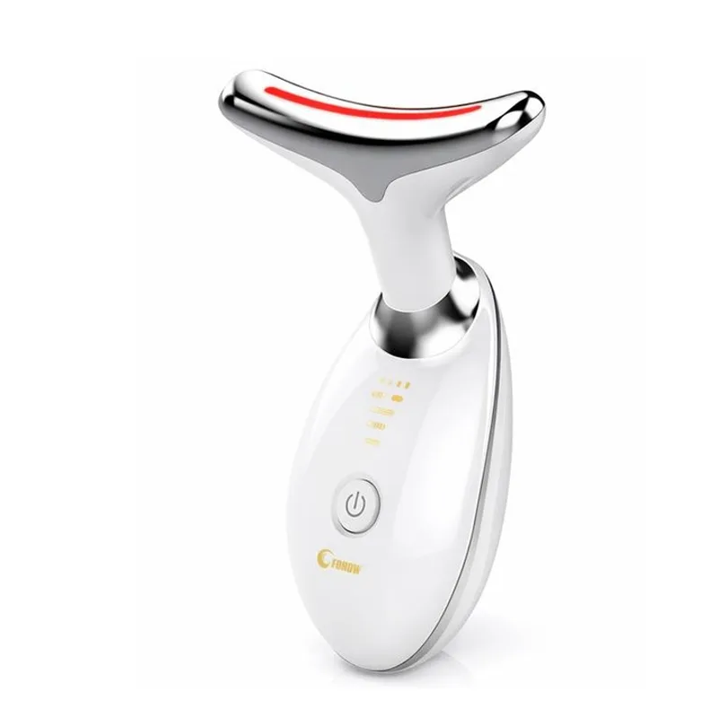
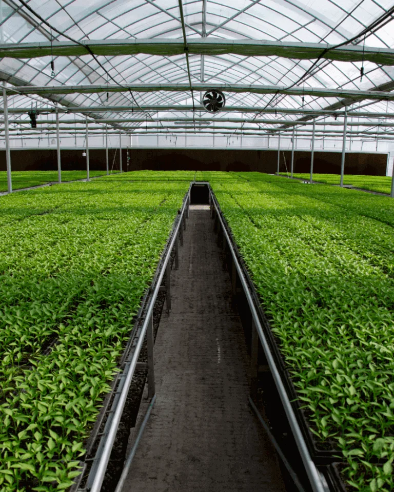

Оздоровительное питание
Эликсир «Феникс»
Кордицепс, линчжи, шиитаке, гериций и мёд. 4 флакона по 30 мл
Подробнее о продукте →Помогу правильно составить схему приёма продукции по принципам Ян Шен питания, приглашу на пробные сеансы и подскажу обучение
Здесь вся продукция по сериям. Подробно о каждом продукте расскажу лично: напишите, и я подскажу, что подойдёт именно вам
Эликсиры, капсулы, пастилки, чай, кофе, напитки
02 · 9 приборовБЭМ, ТИМ, РЭМ, массажёры и девайсы. Можно попробовать на сеансе
03 · 7 продуктовУход за кожей лица и зубная паста
04 · 4 продуктаПрокладки, тампоны, набор для интимной гигиены
05 · 11 продуктовПояса, наколенники, матрасы, постельные принадлежности
06 · 6 товаровГели, бальзам, масло и перчатки для массажа
Продукция Fohow создана по канонам традиционной китайской медицины и относится к трём частям Ян Шен: питание, движение (приборы и функциональный текстиль) и психология, то есть душевная гармония. Самочувствие складывается из всех трёх сразу
Что такое Ян Шен →Несколько продуктов, с которых чаще всего начинают знакомство с Fohow
Кордицепс, линчжи, шиитаке, гериций и мёд. 4 флакона по 30 мл
Подробнее о продукте →
Экстракт лепестков розы и растительные олигосахариды из свёклы
Спросить про продукт →
Капсулы с пептидами кордицепса
Спросить про продукт →
Мягкие импульсы и инфракрасный прогрев для домашнего ухода
Записаться на пробный сеанс →Нажмите «Спросить», и я расскажу подробно о любом продукте из серии
Каждый прибор можно сначала попробовать на сеансе, а потом решить, нужен ли он дома

Третье поколение массажёра Fohow. Ультразвуковая насадка из титанового сплава для массажа лица и тела, кожаный кейс, зарядка по USB
Спросить про прибор →
Ревитализирующий энергетический массажёр. Ставится на пол, вы сидите, поставив босые ноги на пластину. Сочетает прогрев по традициям ТКМ и современные технологии. Сеанс около 30 минут
Записаться на пробный сеанс →
Прибор для прогрева тела паром и в дальнем инфракрасном диапазоне. Складывается и хранится в сумке
Спросить про прибор →
Массажёр для лица и зоны вокруг глаз. Шаровидная головка вращается на 360 градусов и нагревается, есть LED-свет и ионизация. Повторяет приёмы китайского массажа: касание, нажатие, разминание
Спросить про девайс →
Для лица, шеи и зоны декольте. Свет трёх цветов, вибрация, тепло, EMS-стимуляция и ионы. Три режима: CLEAN, EMS и HOT. Процедура 12-15 минут
Спросить про девайс →Описания по материалам Fohow. Приборы бытового назначения, не медицинские изделия. Приборы не для детей и не во время беременности. Перед применением проконсультируйтесь со специалистом
Fohow транснациональная группа компаний, которая занимается исследованиями, производством и продвижением натуральной оздоровительной продукции и приборов, созданных на основе знаний и опыта традиционной китайской медицины
Специалисты по традиционной китайской медицине и оздоровительному питанию, биологи, инженеры-технологи. Три структуры: Исследовательский центр, Центр контроля и лабораторного анализа, Опытно-экспериментальный центр

ЭкоАгро Fohow у водохранилища Даньцзянкоу, в заповедной водоохранной зоне. Участки для выращивания сырья 1 390 000 м²
Чжухайская и Гуандунская биотехнологические компании, Наньянский научно-технический парк, Чжуншаньская текстильная компания. Автоматизированные линии и проверка каждой партии
По материалам официального сайта Fohow, раздел «Исследования и производство»

Корзины и оплаты на сайте нет. Всё решаем в личном разговоре
В каталоге или по совету знакомых
Одна кнопка, и чат открыт
Подскажу, как принимать и что сочетать
Заказ вы оформляете сами, подскажу, как это сделать
Статьи по материалам вашего канала. Людям есть что почитать, а поиск Яндекса приводит новых
Почему в ТКМ смотрят на человека целиком, а не на отдельный симптом
Три части Ян Шен, пять методов питания и как Fohow создаёт продукцию. По книге Ю Фэя Читать →
Почему «Иссиня-чёрные горы» стали Жёлтыми в 747 году